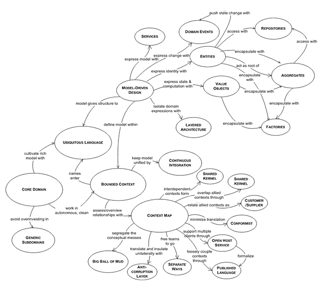
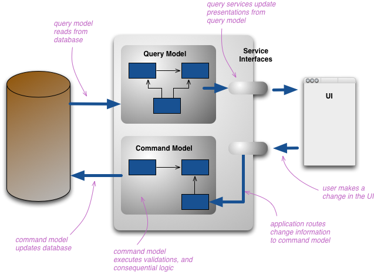
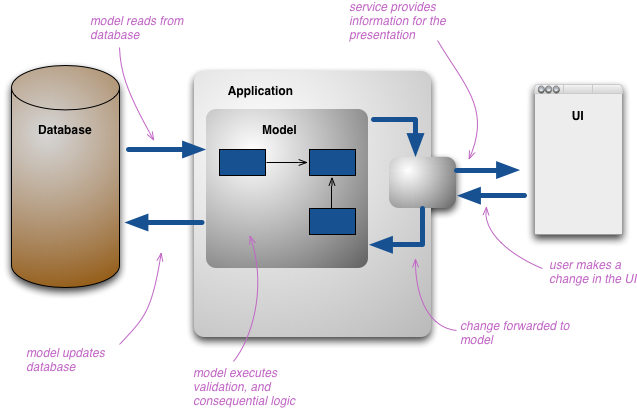
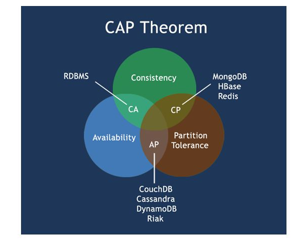

领域驱动设计
DDD(领域驱动设计)， 这部分包含构建和浏览设计 Arkenstone 必备的一些IT 基础知识， 纯IT 人员需要仔细阅读。
概述¶
- DDD: Domain-driven Design，领域驱动设计
- CQRS:Command Query Responsibility Segregation， 命令查询分离。
- EventSource： 事件源
- CAP
下面只能做粗略的介绍这些概念， 他们每个都有独立成书来深入阐述的， 当你联系实际逐渐理解其中的微妙之处， 在实践应用中便会产生共鸣，自有亮点和可取之处，但是需要集合自己领域特征、业务背景和团队的素质，公司的组织资产，不可一味强求。
DDD: 领域驱动设计¶
DDD: Domain-driven Design，领域驱动设计; 在软件设计领域有各种各样的pattern； 领域驱动设计， 也是一种设计的套路；
Domain 领域； Design 设计； Driven 驱动；DDD 理念提出者是 Eric Evans， 可以参考他的书: Domain-Driven Design: Tackling Complexity in the Heart of Software ;
中文亦已出版 领域驱动设计 软件核心复杂性应对之道 上面的截图也是来自此书。
领域（Domain）¶
领域是一个比较大的概念， 我们构造的这个系统是解决那个领域的问题， 比如一个航空管理系统， 一个咖啡馆，一个银行系统， 一个保险销售系统，一个在线电子商务系统， 一个交易系统等等。 一个系统可能跨不同的领域， 比如我们零售系统，他势必要和货运（快递）系统， 报价系统， 和推荐系统等由紧密的联系。
某个领域就是为了解决这个行业的痛点， 比如我们要做一个去中心化的交易系统，就是为了解决，现在的交易系统， 费用高，效率低，透明度低，门槛高等。 我们就是需要让所有的人， 可以随时， 随地，随心的交易全球的金融产品。 这个就是我们定位的领域。
模型（Model）:
"A useful approximation to the problem at hand." -- Gerry Sussman
比如我们所一个 Person 人的模型， 其实他不是一个真正的人， 他仅仅是代表一个人的模型，他不具备一个人的所有属性（AI将来说不定）；可能在我们问题的上下文中（context）中，我们不需要一个人的所有的属性， 我们不关注这个人血型、身高等等； 不同领域中，对同一个对象可能塑造不同的模型， 这个看你的领域的关注点和切入点， 比如最简单的 员工 模型， 在人力资源部， 和销售部门肯定有不同的意义。
上下文（Context） 这个是个比较重要的概念， 解决问题都离不开上下文。
领域模型（Domain model）¶
设计（Design） & 驱动 (Driven)¶
DDD中的设计主要指领域模型的设计, 强调领域模型是整个系统的核心，领域模型也是整个系统的核心价值所在。每一个领域，都有一个对应的领域模型，领域模型能够很好的帮我们解决复杂的业务问题。
领域模型包含了领域和代码实现，确保了最终的代码实现就一定是解决了领域中的核心问题。因为：1）领域驱动领域模型设计；2）领域模型驱动代码实现。我们只要保证领域模型的设计是正确的，就能确定领域模型可以解决领域中的核心问题；同理，我们只要保证代码实现是严格按照领域模型的意图来落地的，那就能保证最后出来的代码能够解决领域的核心问题的。这个思路，和传统的分析、设计、编码这几个阶段被割裂（并且每个阶段的产物也不同）的软件开发方法学形成鲜明的对比。
DDD中，我们总是以领域为边界，分析领域中的核心问题（核心关注点），然后设计对应的领域模型，再通过领域模型驱动代码实现。而像数据库设计、持久化技术等这些都不是DDD的核心，而是外围的东西。
领域驱动设计（DDD）告诉我们的最大价值我觉得是：当我们要开发一个系统时，应该尽量先把领域模型想清楚，然后再开始动手编码，这样的系统后期才会很好维护； 但是在实际的操作中非常难，很多人很难把系统的边界分得很清楚， 其实有时候能分清楚，用不用DDD 倒无所谓了。 概括起来DDD 有一下几个特点：
- 领域就是问题域，有边界，领域中有很多问题；
- 任何一个系统要解决的那个大问题都对应一个领域；
- 通过建立领域模型来解决领域中的核心问题，模型驱动的思想；
- 领域建模的目标针对我们在领域中所关心的问题，即只针对核心关注点，而不是整个领域中的所有问题；
- 领域模型在设计时应考虑一定的抽象性、通用性，以及复用价值；
- 通过领域模型驱动代码的实现，确保代码让领域模型落地，代码最终能解决问题；
- 领域模型是系统的核心，是领域内的业务的直接沉淀，具有非常大的业务价值；
- 技术架构设计或数据存储等是在领域模型的外围，帮助领域模型进行落地；
CQRS¶
命令查询的责任分离Command Query Responsibility Segregation (简称CQRS)模式是一种架构体系模式，能够使改变模型的状态的命令和模型状态的查询实现分离。这属于DDD应用领域的一个模式，主要解决DDD在数据库报表输出上处理方式。
Greg Young 是提出来此概念，布道者人之一， Eric Evans on How Technology Influences DDD 。
下图来自 Martin Fowler CQRS
命令（Command）¶
所有对于领域模型状态的修改都必须通过命令完成。 命令一般都是一个形象化的动词标识。比如 DepositMoneyToAccountCommand; 顾名思义就是往一个account 上面充钱。 如果这个命令成功， 他必然涉及到核心 领域模型的 状态转换。比如这个账号上面金额增加或者减少，
事件（Event）¶
事件标识一个已经在领域发生了的状态改变。注意这个事件是历史的，以及发生完了， 所以是永远不能改变的。这个我们再下面的事件源中将会再说一把。 一般以过去词代替， 比如MoneyDepositedToAccountEvent; 无论命令还是事件， 都需要遵循immutable原则； 这个比较直观， 既然已经发出的命令， 和产生的事件， 就不应该再改变， 保持他们的不变性，会给你整体架构设计带来意想不到的便捷，但是一旦打破由会带来无尽的烦恼。
查询（Query）¶
Greg Young 把领域模型分为两种：状态校验，以及状态转换，维持当前状态的一个视图， Command 和Event 对于前面， 那么查询, 主要针对 Domain 状态查看。
在传统意义上， 我们设计一个系统，对于数据的操作， 无非CRUD, 就是下面的模型：
对于简单的应用， 这个已经非常够用，但是随着业务的复杂度增加，往往更多的过程和信息需要披露， 我们需要知道整个状态变化的历程， 同时需要回溯到某个点的某个状态。CQRS 主要在分离这个词上面， 当今应用程序产生如此复杂性的原因之一在于对 贫血领域模型 的大量使用，组成这种模型的实体只包含数据，由与之分离的服务负责处理逻辑。另一个原因在于对数据进行读取与变更时使用了相同的接口。缺乏读写分离性是真正的问题所在，正确的方式是将数据的查询视为一种完全不同的关注点， 实践应用中对于数据的读写往往有下面一些特征：
- 对数据的读取往往比写入频繁得多
- 在读取数据时，我们通常会获取大量数据，或是一个数据列表。与之相比，对数据的写入通常只影响一个单一的聚合。
- 从用户的角度来看，数据的读取应当表现出比写入更高的性能。对于用户来说，在进行数据变更时产生一些拖慢的现象更易于接受。
事件源（EventSource）¶
涉及到 DDD & CQRS 必然会谈到事件源， 其实事件源，是一个很好的设计方式，如果你熟悉RDBMS的transaction log 设计方式，可能对此感同身受， 事件源设计方式，就是把系统所有发生的事件都存储起来。事件源设计方式好处：
- 可以把系统回溯到以前任何一个状态（debug, diagnose, support 等等）
- 有整个系统的历史， 方便audit ， 追踪分析
- 多种下游可以消费
- 便于扩展， 系统之间协调等
事件源， 不是一定非得配合CQRS 使用， 对于大部分系统可以非常便捷的引入，特别对于现在大数据分析追踪，事件源将非常有帮助。
CAP¶
Consistency（一致性）：在分布式系统中的所有数据备份，在同一时刻是否同样的值。（等同于所有节点访问同一份最新的数据副本）
Availability（可用性）：在集群中一部分节点故障后，集群整体是否还能响应客户端的读写请求。（对数据更新具备高可用性）
Partition tolerance（分区容错性）：两个复制系统之间，如果发生了计划之外的网络连接问题，对于这种情况，有一套容错性设计来保证。
CAP 理论，任何分布式系统只可同时满足二点，没法三者兼顾，架构师不要将精力浪费在如何设计能满足三者的完美分布式系统，而是应该进行取舍。
大家比较熟悉的一般是针对我们关系数据库的ACID模型，满足高可用性和强一致性，也就是上面的CA部分，而对于分布式事务一般采用2PC(two-phase commit)，比如J2EE 中的JTA来实现， 但是2PC is the anti-scalability pattern (Pat Helland) 是反可伸缩模式；而对于web 2.0 时代，对于数据强一致性需求没有那么突出， 部分牺牲高强一致性， 换取可用性或可靠性，于是有了BASE模型：
- 基本可用（Basically Available）
- 软状态（Soft state）
- 最终一致（Eventually consistent）：两个复制系统之间，如果发生了计划之外的网络连接问题，对于这种情况，有一套容错性设计来保证
当有网络分区情况下，也就是分布式系统中，你不能又要有完美一致性和100%的可用性，只能这两者选择一个。在单机系统中，你则需要在一致性和延迟性latency之间权衡
当然，牺牲一致性，并不是完全不管数据的一致性，否则数据是混乱的，那么系统可用性再高分布式再好也没有了价值。牺牲一致性，只是不再要求关系型数 据库中的强一致性，而是只要系统能达到最终一致性即可，考虑到客户体验，这个最终一致的时间窗口，要尽可能的对用户透明，也就是需要保障“用户感知到的一致性”。通常是通过数据的多份异步复制来实现系统的高可用和数据的最终一致性的，“用户感知到的一致性”的时间窗口则 取决于数据复制到一致状态的时间。
最终一致性(eventually consistent)强调的是系统中所有的数据副本，在经过一段时间的同步后，最终能够达到一个一致的状态。因此，最终一致性的本质是需要系统保证最终数据能够达到一致，而不需要实时保证系统数据的强一致性。 亚马逊首席技术官Werner Vogels在于 2008年发表的一篇文章 中对最终一致性进行了非常详细的介绍。
最终一致性；可以分为从客户端和服务端两个不同的视角。从客户端来看，一致性主要指的是多并发访问更新过的数据如何获取的问题。从服务端来看，则 是更新如何复制分布到整个系统，以保证数据最终一致。一致性是因为有并发读写才有的问题，因此在理解一致性的问题时，一定要注意结合考虑并发读写的场景。
在实际工程实践中，最终一致性存在以下五类主要变种:
因果一致性。如果进程A通知进程B它已更新了一个数据项，那么进程B的后续访问将返回更新后的值，且一次写入 将保证取代前一次写入。与进程A无因果关系的进程C的访问遵守一般的最终一致性规则。
“读己之所写（read-your-writes）”一致性。当进程A自己更新一个数据项之后，它总是访问到 更新过的值，绝不会看到旧值。这是因果一致性模型的一个特例。
会话（Session）一致性。这是上一个模型的实用版本，它把访问存储系统的进程放到会话的上下文中。只要 会话还存在，系统就保证“读己之所写”一致性。如果由于某些失败情形令会话终止，就要建立新的会话，而且系统的保证不会延续到新的会话。
单调（Monotonic）读一致性。如果进程已经看到过数据对象的某个值，那么任何后续访问都不会返回在那 个值之前的值。
单调写一致性。系统保证来自同一个进程的写操作顺序执行。要是系统不能保证这种程度的一致性，就非常难以编程 了。
上述最终一致性的不同方式可以进行组合，例如单调读一致性和读己之所写一致性就可以组合实现。并且从实践的角度来看，这两者的组合，读取自己更新的数据，和一旦读取到最新的版本不会再读取旧版本，对于此架构上的程序开发来说，会少很多额外的烦恼。
从服务端角度，如何尽快将更新后的数据分布到整个系统，降低达到最终一致性的时间窗口，是提高系统的可用度和用户体验非常重要的方面。对于分布式数 据系统（参考鸽笼原理／抽屉原理）：
N — 数据复制的份数
W — 更新数据是需要保证写完成的节点数
R — 读取数据的时候需要读取的节点数
如果W+R>N，写的节点和读的节点重叠，则是强一致性。例如对于典型的一主一备同步复制的关系型数据库，N=2,W=2,R=1，则不管读 的是主库还是备库的数据，都是一致的。
如果W+R<=N，则是弱一致性。例如对于一主一备异步复制的关系型数据库，N=2,W=1,R=1，则如果读的是备库，就可能无法读取主库 已经更新过的数据，所以是弱一致性。
对于分布式系统，为了保证高可用性，一般设置N>=3。不同的N,W,R组合，是在可用性和一致性之间取一个平衡，以适应不同的应用场景。
如果N=W,R=1，任何一个写节点失效，都会导致写失败，因此可用性会降低，但是由于数据分布的N个节点是同步写入的，因此可以保证强一致性。
如果N=R,W=1，只需要一个节点写入成功即可，写性能和可用性都比较高。但是读取其他节点的进程可能不能获取更新后的数据，因此是弱一致性。这种情况 下，如果W<(N+1)/2，并且写入的节点不重叠的话，则会存在写冲突
我们的问题¶
我们需要搭建一个分布式去中心化的交易系统， 所以高可用性，对于我们非常重要， 同时他又是个交易系统，一致性也是必不可少， 这个系统需要可以说需要满足上面的CAP所有的选项， 但是理论和证实， 同时满足三样是不太可能的；于是我们得做些取舍，我们的平台首先是面向移动端平台，受众是年轻一代手机端用户， 大家可以在任何一个场景，都可以随意掏出自己的手机， 进行买卖全球的金融产品。
高可用性， 高扩展性， 最终一致性， 成为我们系统必要的需求。 在综合权衡各方的利害后， 我们采用DDD设计方式。
怎么实现¶
其实对于上面所说的设计方式， 没有约定俗成的规范， 具体的实现在于和自己业务场景， 组织环境有关， 同时理论创建者本人也建议大家不需要必须套具体的模版和框架。可以说DDD本身的意义就在于， 更好的和你的业务模式融合，一最自然的方式， 那么我们这里还是选择了一些开源的框架， 而没有去自己造轮子。
- Axonframework 提供DDD基本的结构， 当然这里我们做了很多的取舍以提升性能
- KAFKA 作为消息中间件，系统的事件由KAFKA分发出去
- APACHE Ignite 作为内存计算网格
- Redis作为不同模块之间交互渠道，放些公用小的reference 信息
下面将分析， 几大业务模块， 然后就是上面几个框架在我们使用中的使用。